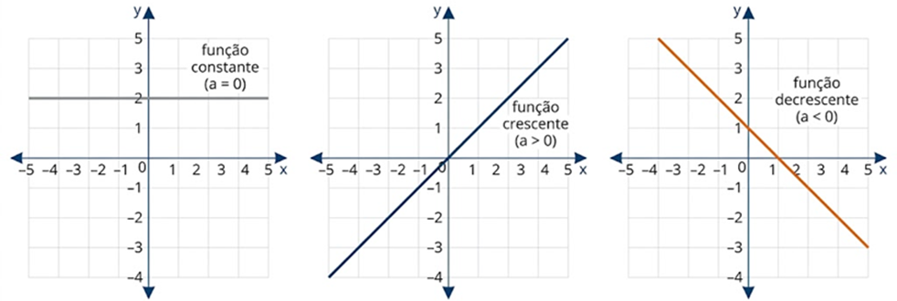
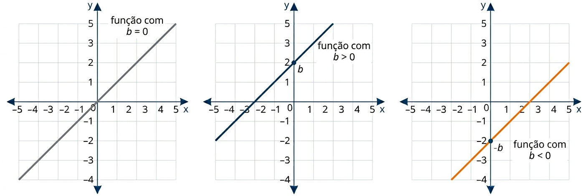

A função do 1º grau, ou função afim, é aquela cuja lei de formação pode ser escrita como:
$f(x) = ax + b$
Coeficiente Angular ($a$): Define a inclinação da reta.
Coeficiente Linear ($b$): Define onde a reta cruza o eixo $y$.
Gráfico: Uma reta (sempre!).
📖 O que é uma Função do 1º Grau?
A Função Afim é um dos conceitos mais importantes da matemática, pois modela situações de crescimento ou decrescimento constante. Se você paga um valor fixo por um serviço mais um valor variável por hora, você está lidando com uma função do 1º grau.
1. O Papel do Coeficiente angular
O comportamento da reta é ditado pelo valor de $a$:
Função Crescente ($a > 0$): Conforme o valor de $x$ aumenta, o valor de $y$ também aumenta.
Função Decrescente ($a < 0$): Conforme o valor de $x$ aumenta, o valor de $y$ diminui.
Função Constante ($a = 0$): O gráfico é uma reta horizontal.

Figura 1: A inclinação da reta depende diretamente do sinal do coeficiente angular $a$.
2. O Papel do Coeficiente Linear ($b$)
O coeficiente $b$ é chamado de "ordenada na origem". Ele indica exatamente o ponto $(0, b)$ onde a reta intercepta o eixo vertical ($y$). Se $b=0$, a função é chamada de Função Linear e passa obrigatoriamente pela origem $(0,0)$.

Figura 2: O coeficiente linear $b$ determina o ponto de intersecção da reta com o eixo das ordenadas ($y$).
3. Zero ou Raiz da Função
O zero da função é o valor de $x$ que faz com que $f(x) = 0$.
$$ax + b = 0 \implies x = -\frac{b}{a}$$
💡 Matemática em Ação
🚗 Apps de Transporte
O preço da corrida é uma função afim! Existe um valor fixo (bandeirada) somado ao valor variável por quilômetro rodado.
🔌 Contas de Consumo
Sua conta de água ou luz possui uma "taxa de disponibilidade" (fixo) mais o custo por cada $m^3$ ou $kWh$ consumido.
💻 Simulação Interativa: Gráfico da Função
Para uma melhor experiência, clique no botão abaixo para abrir o simulador em uma tela cheia:
Enunciado: Em qual ponto a reta da função $f(x) = \frac{1}{2}x - 5$ corta o eixo das ordenadas ($y$)?
Resolução: Uma função corta o eixo $y$ no valor do coeficiente linear $b$.
Como $b = -5$, o ponto de intersecção é $(0, -5)$.
R 4: Construção da Lei de Formação
Enunciado: Determine a lei da função do 1º grau que passa pelos pontos $(0, 3)$ e $(1, 5)$.
Resolução: Se passa em $(0, 3)$, então $b = 3$.
Usando o ponto $(1, 5)$ na fórmula $f(x) = ax + 3$:
$5 = a(1) + 3 \implies a = 5 - 3 \implies a = 2$.
A lei é $f(x) = 2x + 3$.
R 5: Problema Contextualizado
Enunciado: O custo de produção de uma fábrica é $R\$ 500,00$ fixos mais $R\$ 10,00$ por peça. Qual o custo para produzir 80 peças?
Resolução: A função custo é $C(x) = 10x + 500$.
Para $x = 80$:
$$C(80) = 10(80) + 500 = 800 + 500 = 1300$$
O custo é de $R\$ 1.300,00$.
✍️ 5 Questões Propostas (P 6 a 10)
P 6: Análise de Gráfico
Enunciado: Uma função afim tem $a = 3$ e passa pelo ponto $(2, 10)$. Qual o valor de $b$?
Resolução: Substituímos na fórmula $y = ax + b$:
$$10 = 3(2) + b \implies 10 = 6 + b \implies b = 4$$
P 7: Zero da Função Negativa
Enunciado: Determine a raiz da função $f(x) = -3x - 9$.
Resolução: $$-3x - 9 = 0 \implies -3x = 9 \implies x = \frac{9}{-3} \implies x = -3$$
P 8: Valor de Função Afim
Enunciado: Se $f(x) = 2x + b$ e $f(3) = 10$, qual o valor de $f(5)$?
Resolução: Primeiro achamos $b$: $10 = 2(3) + b \implies b = 4$.
Agora calculamos $f(5)$ com a lei $f(x) = 2x + 4$:
$$f(5) = 2(5) + 4 = 14$$
P 9: Comparação de Planos
Enunciado: O Plano A cobra $R\$ 30$ fixos e $R\$ 2$ por hora. O Plano B cobra apenas $R\$ 5$ por hora. A partir de quantas horas o Plano A é mais barato?
Resolução: Montamos as funções: $A(x) = 2x + 30$ e $B(x) = 5x$.
Queremos $A(x) < B(x)$:
$$2x + 30 < 5x \implies 30 < 3x \implies 10 < x$$
O Plano A é mais barato para mais de 10 horas.
P 10: Variação de Coeficiente
Enunciado: Se aumentarmos o valor de $a$ na função $f(x) = ax + b$, o que acontece com a inclinação da reta no gráfico?
Resolução: A reta fica mais inclinada em relação ao eixo $x$ (sobe mais rápido se for positiva ou desce mais bruscamente se for negativa).
🎓 TESTES (T 11 a 15)
T 11: (ENEM) Função Afim — Estratégia de Mercado
Duas empresas do mercado de pequenos reparos domésticos determinam o valor de seus serviços a partir de um valor fixo acrescido de um valor cobrado por hora. A empresa X cobra R\$ 60,00 de valor fixo mais R\$ 18,00 por hora de serviço prestado. A empresa Y cobra R$ 24,00 de valor fixo e está definindo um novo valor a ser cobrado por hora. Sua estratégia de mercado prevê que, em relação à empresa X, o custo total do serviço deve ser menor ou igual para trabalhos de até duas horas de duração.
Qual é o valor máximo, em real, que a empresa Y poderá cobrar por hora de serviço prestado a fim de atender à sua estratégia de mercado?
A) $18$ B) $36$ C) $48$ D) $54$ E) $60$
Resolução: Alternativa D.
Custo X em 2 horas: $60 + 18 \times 2 = 96$. A condição é $Y \leq X$, ou seja:
$24 + h \cdot 2 \leq 96 \implies 2h \leq 72 \implies h \leq 36$.
Testando $h = 36$: $Y(2) = 24 + 36 \times 2 = 96 = X(2)$. ✓
O valor máximo por hora é $\mathbf{R\$\ 36{,}00}$.
T 12: (ENEM) Função Afim — Lucro do Produtor
Por muitos anos, o Brasil tem figurado no cenário mundial entre os maiores produtores e exportadores de soja. Entre os anos de 2010 e 2014, houve uma forte tendência de aumento da produtividade, porém, um aspecto dificultou esse avanço: o alto custo do imposto ao produtor associado ao baixo preço de venda do produto. Em média, um produtor gastava R\$ 1 200,00 por hectare plantado, e vendia por R\$ 50,00 cada saca de 60 kg. Ciente desses valores, um produtor pode, em certo ano, determinar uma relação do lucro $L$ que obteve em função das sacas de 60 kg vendidas. Suponha que ele plantou 10 hectares de soja em sua propriedade, na qual colheu $x$ sacas de 60 kg e todas as sacas foram vendidas.
Qual é a expressão que determinou o lucro $L$ em função de $x$ obtido por esse produtor nesse ano?
A) $L(x) = 50x - 1\,200$ B) $L(x) = 50x - 12\,000$ C) $L(x) = 50x + 12\,000$ D) $L(x) = 500x - 1\,200$ E) $L(x) = 1\,200x - 500$
Resolução: Alternativa B.
Receita: $50x$ (R$ 50,00 por saca vendida).
Custo total: $1\,200 \times 10 = 12\,000$ (R$ 1 200,00 por hectare em 10 hectares).
$L(x) = 50x - 12\,000$.
21:34 01/05/202621:34 01/05/2026
T 13: (FUVEST) Distância entre Pontos — Formigas
Observou-se que todas as formigas de um formigueiro trabalham de maneira ordeira e organizada. Foi feito um experimento com duas formigas e os resultados obtidos foram esboçados em um plano cartesiano no qual os eixos estão graduados em quilômetros. As duas formigas partiram juntas do ponto O, origem do plano cartesiano xOy. Uma delas caminhou horizontalmente para o lado direito, a uma velocidade de 4 km/h. A outra caminhou verticalmente para cima, à velocidade de 3 km/h.
Após 2 horas de movimento, quais as coordenadas cartesianas das posições de cada formiga?
A) $(8;0)$ e $(0;6)$ B) $(4;0)$ e $(0;6)$ C) $(4;0)$ e $(0;3)$ D) $(0;8)$ e $(6;0)$ E) $(0;4)$ e $(3;0)$
Resolução: Alternativa A.
Formiga 1 (horizontal, 4 km/h): distância $= 4 \times 2 = 8$ km → posição $(8;\, 0)$.
Formiga 2 (vertical, 3 km/h): distância $= 3 \times 2 = 6$ km → posição $(0;\, 6)$.
T 14: (ENEM) Função Afim — Pontuação no Futebol
Num campeonato de futebol de 2012, um time sagrou-se campeão com um total de 77 pontos ($P$) em 38 jogos, tendo 22 vitórias ($V$), 11 empates ($E$) e 5 derrotas ($D$). No critério adotado para esse ano, somente as vitórias e empates têm pontuações positivas e inteiras. As derrotas têm valor zero e o valor de cada vitória é maior que o valor de cada empate. Um torcedor, considerando a fórmula da soma de pontos injusta, propôs aos organizadores do campeonato que, para o ano de 2013, o time derrotado em cada partida perca 2 pontos, privilegiando os times que perdem menos ao longo do campeonato. Cada vitória e cada empate continuariam com a mesma pontuação de 2012. Qual a expressão que fornece a quantidade de pontos ($P$), em função do número de vitórias ($V$), do número de empates ($E$) e do número de derrotas ($D$), no sistema de pontuação proposto pelo torcedor para o ano de 2013?
A) $P = 3V + E$ B) $P = 3V - 2D$ C) $P = 3V + E - D$ D) $P = 3V + E - 2D$ E) $P = 3V + E + 2D$
Resolução: Alternativa D.
Em 2012: $22V + 11E = 77$. Testando $V = 3$ e $E = 1$: $22(3) + 11(1) = 66 + 11 = 77$. ✓
Cada vitória vale 3 pontos e cada empate vale 1 ponto.
Em 2013, cada derrota passa a valer $-2$ pontos.
$P = 3V + E - 2D$.
T 15: (ENEM) Função Afim — Corrida de Táxi
Os sistemas de cobrança dos serviços de táxi nas cidades A e B são distintos. Uma corrida de táxi na cidade A é calculada pelo valor fixo da bandeirada, que é de R\$ 3,45, mais R\$ 2,05 por quilômetro rodado. Na cidade B, a corrida é calculada pelo valor fixo da bandeirada, que é de R\$ 3,60, mais R\$ 1,90 por quilômetro rodado. Uma pessoa utilizou o serviço de táxi nas duas cidades para percorrer a mesma distância de 6 km. Qual o valor que mais se aproxima da diferença, em reais, entre as médias do custo por quilômetro rodado ao final das duas corridas?
A) $0{,}75$ B) $0{,}45$ C) $0{,}38$ D) $0{,}33$ E) $0{,}13$
Resolução: Alternativa E.
Custo total cidade A: $3{,}45 + 2{,}05 \times 6 = 3{,}45 + 12{,}30 = R\$\,15{,}75$.
Custo total cidade B: $3{,}60 + 1{,}90 \times 6 = 3{,}60 + 11{,}40 = R\$\,15{,}00$.
Média por km cidade A: $\dfrac{15{,}75}{6} \approx 2{,}625$ R$/km$.
Média por km cidade B: $\dfrac{15{,}00}{6} = 2{,}500$ R$/km$.
Diferença: $2{,}625 - 2{,}500 = 0{,}125 \approx \mathbf{0{,}13}$.